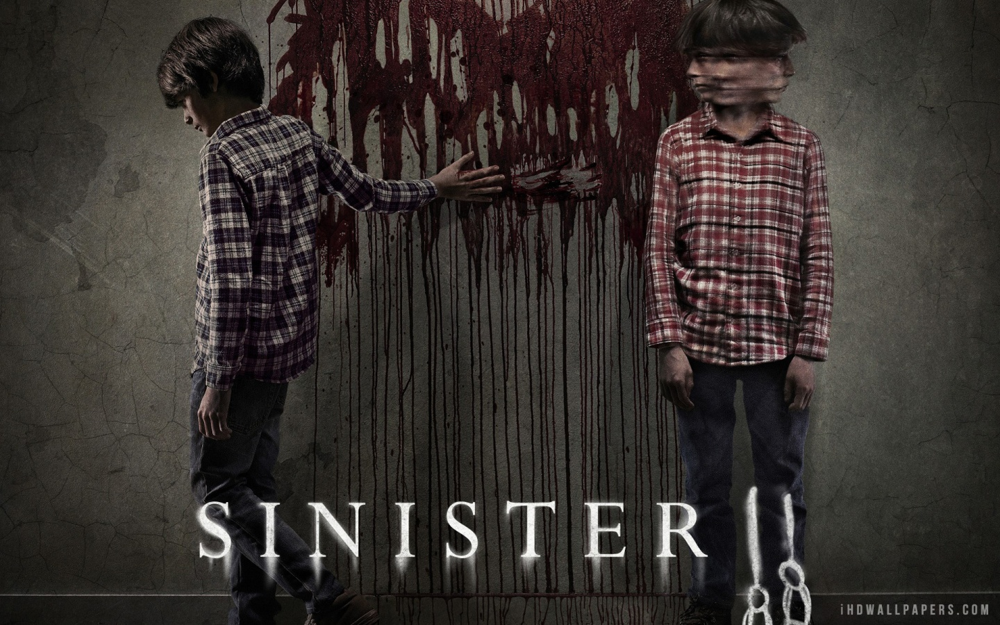

Siniestro80% de coincidencia 1 h 46 minEllison Oswald (Ethan Hawke) escritor de historias criminales está en una mala racha; no ha tenido un éxito en más de 10 años y está desesperado. Cuando descubre una película que muestra las muertes de una familia, él promete resolver el misterio.REPRODUCIRTRAILERProtagonistas: Ethan Hawke, James Ransone, Nikolas King. Genero: Terror.